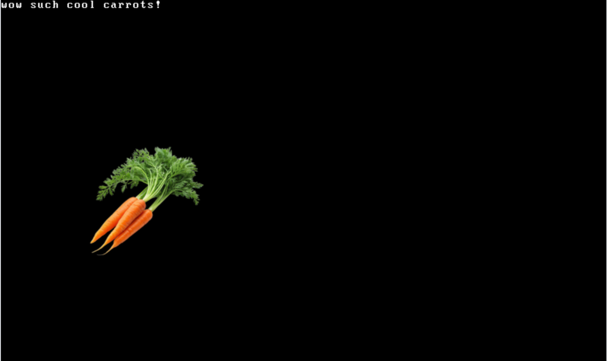

Hi, I'm Ishaan!
I'm a full-time student at Oregon State University, majoring in Electrical and
Computer Engineering. I've worked with C, C++ and Python and have
some experience in web development (HTML, CSS, and Javascript). Outside
of programming, I spend my free time breathing new life into technology that would have become
e-waste.
experience
July 2026 - August 2026
- Migrated infrastructure into data center, to give clients better access to resources previously
limited by cooling constraints
- Set up and configured cluster computing using Slurm to allow an even distribution of computing
resources to developers
- Designed plugins for AI Agents to interface with Slurm for more efficient workflows
- Created web-based frontend for Slurm to track running processes. It served as a replacement for
the CLI tools that already exist but were hard to visually parse.
June 2024 - July 2024
- Designed the training data for an AI model that analyzes volleyball games. The model was built
to track how each player on the court performed throughout the game, as well as to predict potential
injuries before they happened.
first robotics competition
team #9634: zero tolerance
December 2023 - May 2024
- Designed and mounted vision hardware onto the frame of the robot
- Delegated tasks across the software team to ensure deadlines could be met despite the small number of team members
- Use the IMU and camera data from an Xbox Kinect to run the robot autonomously through the detection of April Tags
July 2022 - June 2023
- Assisted with testing of computer vision system
- Documented existing code and established system for the documenting of future code
-
Wrote tests for superstructure collision, which kept track of the physical locations of the
robot's arm and shooting mechanism to avoid causing any internal damage.
- Assisted in the wiring of the robot
projects
Highighted below are projects that demonstrate my skills with C, C++, Python, and systems-level programming.
For more projects, see my
Github or my
Codeberg
tea
https://codeberg.org/MeanBeanie/tea
A compiler for a statically typed programming language that generated x86_64 assembly
- Written in C
-
Used a mix between
Recursive Descent
and
Pratt Parsing
- Can integrate with C libraries (such as raylib) to allow better insertion into already existing codebases
- Able to make system calls to the Linux kernel to perform operations like reading or writing to files
- Supports namespacing and file inclusion, can recursively search through the current directory and subdirectories for included files
oregon state class fetcher
https://codeberg.org/MeanBeanie/oregon_state_class_fetcher
A series of python scripts that collect data on every course offered at Oregon State University by scraping the school's catalog
- Written in Python
- Scrapes the catalog for information about classes
- Generates a tree of the prequisites required by a particular class
- Includes a REPL that reads in the user's filter for the collected data and prints the classes that match the filter
fui.h
https://codeberg.org/MeanBeanie/fui.h
a single-header graphics library that renders text in cells like a terminal but also supports direct pixel manipulation, like a TUI crossed with a GUI
- Written in C
- Ncurses-like printing functions
- Allows the choice between multiple graphics frontends (SDL, Raylib, X11)
- Supports rendering of custom emoji-like glyphs
